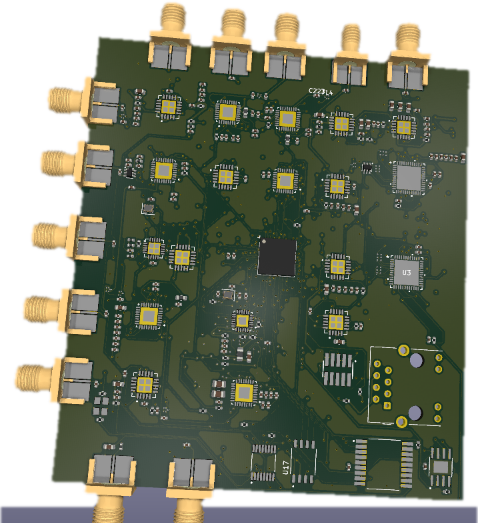
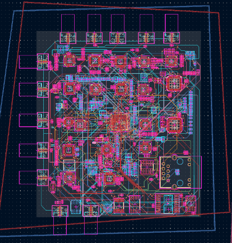
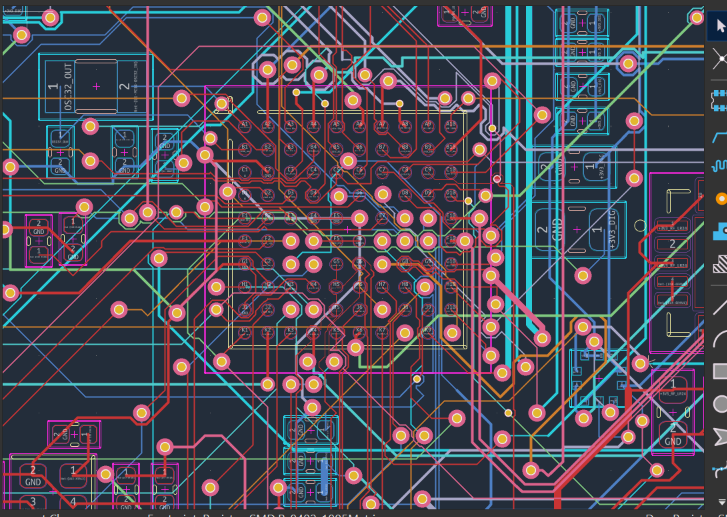
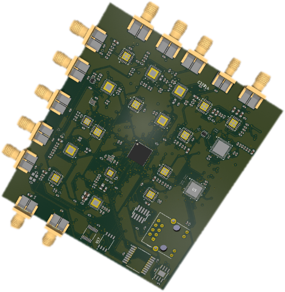
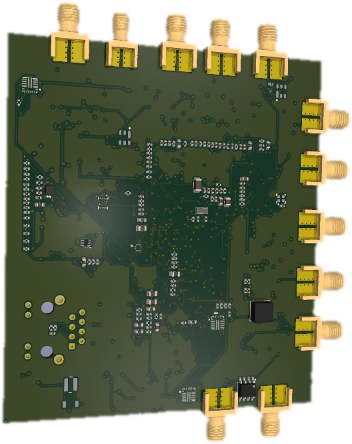
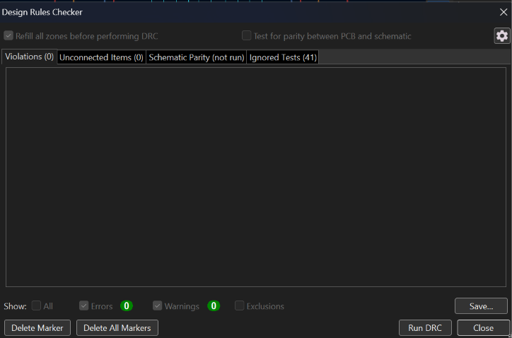

Home / Work / Multi-Radio IoT Gateway
Multi-Radio IoT Gateway — 8-Layer PCB Layout

- Layers
- 8
- Components
- 400+
- MCU
- STM32H7B3VIH6
- Radios
- LR1121 ×4, Si4463 ×2, AT86RF215
- RF connectors
- 10× SMA
- Tool
- KiCad 10
- Scope
- Layout only
- Client
- Fiverr order
01The challenge
The client had finished an 18-sheet KiCad schematic for a multi-radio IoT gateway and needed the board laid out: floor-planning, stackup and routing on eight layers. The design has 400+ components around a high-pin-count STM32H7B3VIH6 MCU.
The hard part was placing five RF sections on one board without interference: four LR1121 multi-band radios, two Si4463 sub-GHz transceivers, and an AT86RF215 dual-band radio paired with an RMII Ethernet PHY. Each has its own antenna feed to one of ten edge-mounted SMA connectors. A TI CDCLVC1108PW buffer fans a 32 MHz reference out to eight outputs feeding the radios and the MCU.
02My role
- Floor-planning of the five RF sections and supporting circuitry
- 8-layer stackup and full-board routing from the client's netlist and BOM
- Antenna feed routing to ten SMA connectors
- Clock distribution routing from the CDCLVC1108PW buffer
- STM32H7 escape routing and decoupling
- DRC and hand-off for fabrication
Schematic capture was out of scope. The schematic was supplied by the client.
03Engineering approach
- Radio sections kept as separate blocks, each with its own antenna feed running to the board edge.
- Clock trace matching and isolation from the RF sections treated as important as the RF routing itself.
- SPI flash, RTC crystal, IMU and barometer placed without disturbing the RF ground planes.
- RMII Ethernet PHY routed alongside the sub-GHz and 2.4 GHz radio sections.
- Dense escape routing and decoupling around the high-pin-count MCU.
04PCB design




05Verification
The layout was run through KiCad's Design Rules Checker before hand-off. The screenshot shows the DRC dialog with no violations, no unconnected items and no warnings.

06Final output
- Completed 8-layer KiCad PCB layout, handed back to the client for fabrication
07Project result
A 400+ component multi-radio board, laid out on eight layers from a client-supplied schematic and returned DRC-verified for fabrication.